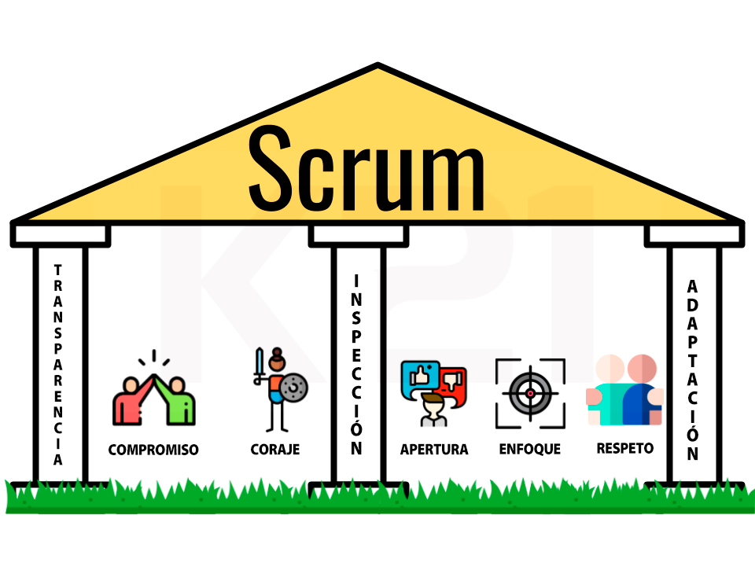
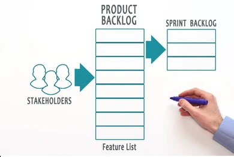

<div class="contenedor-tema">
    <section class="desarrollo">
        <div class="contenedor-title">
            <h2>Metodología Scrum</h2>
        </div>
        <div class="contenedor-desarrollo">
            <div class="contenedor-subtitle">
                <h3>¿Que es Scrum? </h3>
                <br />
                <!--<youtube-player videoId="m5u0P1WPfvs" suggestedQuality="highres" [height]="400" [width]="600"></youtube-player> -->
                <p>&nbsp;<b>Scrum</b> es un proceso en el que se aplican de manera regular un conjunto de buenas
                    prácticas para trabajar colaborativamente, en equipo, y obtener el mejor resultado posible de un
                    proyecto.
                    Estas prácticas se apoyan unas a otras y su selección tiene origen en un estudio de la manera de
                    trabajar de equipos altamente
                    productivos.</p>
                <p><br /></p>
                <p>En <b>Scrum</b> se realizan entregas parciales y regulares del producto final, priorizadas por
                    el beneficio que aportan al receptor del proyecto. Por ello, Scrum está especialmente indicado para
                    proyectos en entornos
                    complejos, donde se necesita obtener resultados pronto, donde los requisitos son cambiantes o poco
                    definidos, donde la innovación,
                    la competitividad, la flexibilidad y la productividad son fundamentales.</p><br />
                <div class="ytb"><youtube-player class ="video" videoId="m5u0P1WPfvs" suggestedQuality="highres" [height]="400" [width]="600">
                </youtube-player></div>
                <br />
                <br />
                <h3>¿En qué se basa la metodología Scrum?</h3>
                <br />
                <p>Al estar enmarcada dentro de las metodologías agile,
                    <b>Scrum</b> se basa en aspectos como:&nbsp;
                </p>
                <p>La flexibilidad en la adopción de cambios y nuevos requisitos durante un
                    proyecto complejo.</p>
                <p></p>
                <ul style="text-align: left;">
                    <br />
                    <li>El factor humano.</li>

                    <li>La colaboración e interacción con
                        el cliente.

                    </li>

                    <li>El desarrollo iterativo como forma de asegurar buenos resultados.</li>
                </ul><br />
                <p></p>

                <h3>Pilares de <b>Scrum</b>.</h3>
                <br/>
                <div class="contenedor-imagenes"></div>
                <br />

                <ul style="text-align: left;">
                    <li><b>Transparencia</b></li>
                </ul>

                <p>Todo plan que se lleve a cabo deberá partir de una
                    idealización específica, en la que se definan las metas
                    determinadas a conseguir. Su finalidad es proporcionar a
                    todos los miembros del equipo la información escencial para
                    orientar su trabajo, y por esto la transparencia tiene un papel
                    fundamental en el proceso.</p>

                <ul style="text-align: left;">
                    <li> <b>Inspección</b></li>
                </ul>
                Los miembros del equipo tienen que impulsar las
                inspecciones comunes a los procesos. En la práctica, el
                propósito es mantener el control de el progreso de las
                ocupaciones, para asegurar que se puedan las metas y que
                el desarrollo se efectúe dentro del tiempo predeterminado.
                <p>Frecuentemente se verifica el progreso para detectar posibles errores. No es algo que se haga
                    diario, es una forma de trabajo auto-organizada</p>
                <br />
                <ul style="text-align: left;">
                    <li> <b>Adaptación</b></li>
                </ul>

                <p>Esta es la clave para conseguir el éxito en proyectos complejos, donde los requisitos son
                    cambiantes o poco definidos y en donde la adaptación, la innovación, la complejidad y flexibilidad
                    son fundamentales.
                    <br />
                    Si al hacer una inspección detecta que algo no está alineado con las metas que se
                    fijaron inicialmente, se puede hacer una habituación. Empero, aquello no es todo, en el
                    procedimiento Scrum el comprador empieza a tener una relación más cercana con el
                    proceso para difundir sus necesidades y avalar cada nueva utilización.
                </p>
                <br />
                <br />
                <h3>Roles de Scrum</h3>
                <br>
                <div class="contenedor-imagenes"></div>
               
                <br />
                <b>
                    <li>Proyect Owner</li>
                </b>

                <p>Es el responsable de tomar las
                    decisiones sobre el desarrollo del
                    proyecto, y de establecer el orden
                    de la prioridad. Además, deberá
                    comunicar a todos los integrantes
                    del equipo los objetivos del
                    proyecto.</p>
                <br />

                <li><b>Scrum Master</b></li>

                <p>El Scrum Master es el responsable de
                    colaborar con los integrantes del
                    equipo para superar los obstáculos
                    que les impida cumplir con los
                    objetivos, es decir, es el responsable
                    de ayudar al equipo a entender
                    completamente la metodología para
                    poder ser aplicada.</p>
                <br />

                <li><b>Development Team Member</b></li>

                <p>Son los encargados de transformar
                    la visión inicial en algo real. Debe
                    estar conformado por un equipo
                    multidisciplinario, encargado de
                    crear el producto con las
                    características necesarias para que
                    pueda satisfacer las expectativas
                    del cliente.</p>
                <br />
                <br />

                <h3 >Herramientas para la Metodologia&nbsp;</h3>
                
                <br />
                <div class="contenedor-imagenes"></div>
                <br/>
                <li><b>  Product backlog</b></li>
                <br />
                <p>Es el listado de tareas que engloba todo un proyecto. Cualquier cosa que debamos hacer debe estar en
                    el product backlog y con un tiempo estimado por el equipo de desarrollo.</p>
                    <br />
                <li><b>Sprint backlog</b></li>
                <br />
                <p>Es el grupo de tareas del product backlog que el equipo de desarrollo elige en el sprint planning
                    junto con el plan para poder desarrollarlas.</p>
                    <br />


            </div>

        </div>

    </section>
</div>